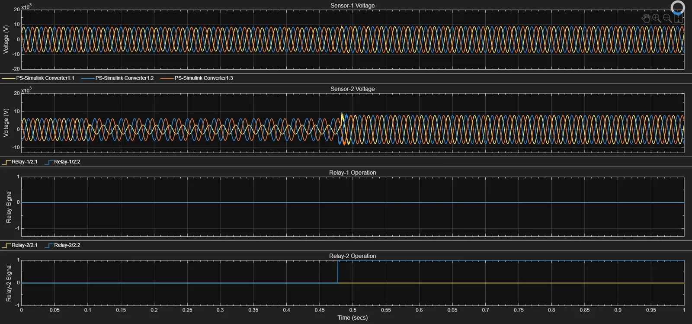
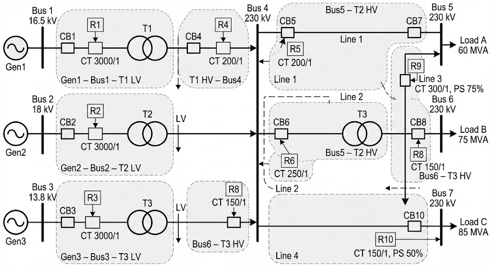
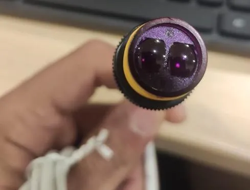
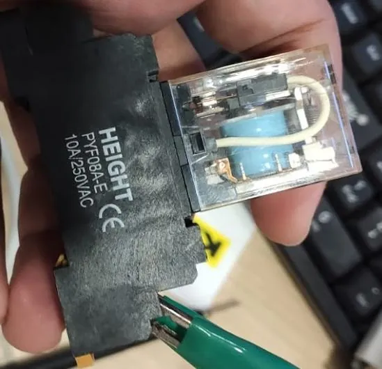
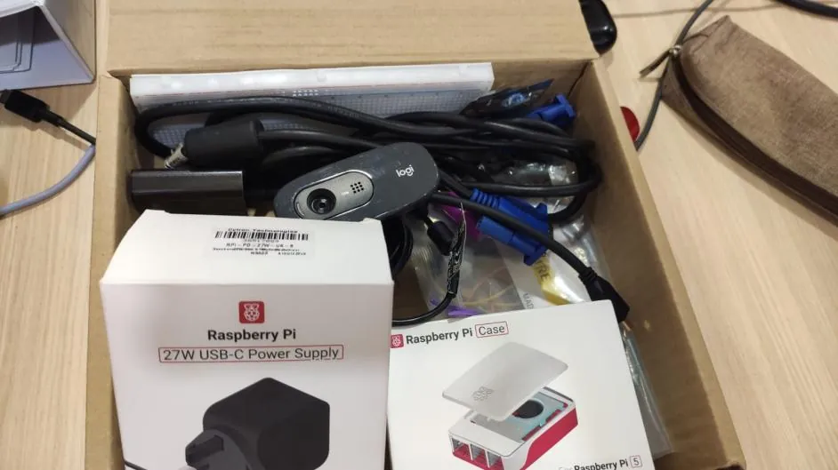
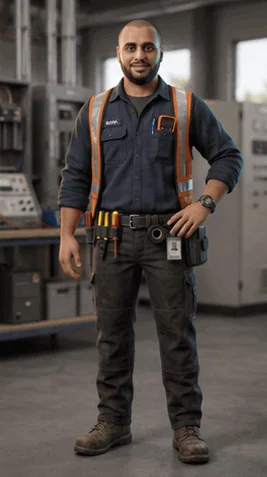

Protection studies, Siemens PLC automation and machine vision for quality control, from four years of coursework and an 18-week R&D internship.
BadrAlbdulmajeed
Scroll
02
Machine vision · final year project
Reading a circuit board with a model that learned without labels
02 / Machine vision · Final year project, APU, 2026 · individual
Self-supervised Vision Transformer for PCB defect detection
Manual inspection of printed circuit boards is slow and labelled defect data is scarce. A MaxViT-Small backbone was pre-trained with SimCLR on unlabelled images, then RF-DETR and DINOv2 were used for detection, exported to ONNX Runtime with CUDA and shown in a Streamlit interface.
77.50%test accuracy across 22 defect classes
0.8281weighted F1 score
68.83%mAP@50 for detection
37.25frames per second after GPU optimisation
Figures as recorded in the final year project report. The interface on the screen above, the plate below and the board in the next scene are outputs of the project's own software.
Detecting that a defect exists is not enough to grade a board: its area matters. Defects were traced as polygons, a YOLOv11 segmentation model was trained on them, and the share of defect pixels becomes a quality percentage. The application runs on a PC and on a Raspberry Pi 5.
Instancesegmentation, one mask per defect
3defect classes: big hole, small hole, scratch
2448 × 2048camera frame, as shown in the application
PC + Pi 5two versions: desktop and Raspberry Pi 5
The board in the scene above and the interface below are the application's own output. The quality figure is its reading for that one board, not an accuracy result.
The inspection application: raw frame, segmentation, legend and result.
04 · Protection, read from the scope
A fault on an 11 kV line, and the relay that clears it

0.27 s0.47 s0.000 s
0.27 s
The primary relay's trip time. In this test it is disabled, so the disturbance at sensor 2 carries on.
0.47 s
The backup relay trips and the voltage recovers: 0.2 s after the primary, so the coordination interval held.

04 · Ten relays on a 230 kV system
Each line graded so the nearest relay trips first
Line 10.30 s
Line 20.30 s
Line 30.70 s
Line 40.80 s
The time between each primary relay and its backup, as verified in the study.
04 / Power systems and protection · Switchgear and Protection, APU, 2025–2026 · individual
Protection that trips selectively and backs itself up
In an open-ended lab, a 33/11 kV radial network was built in Simulink with phase (50/51) and earth-fault (50N/51N) relays and tested across fault types and six IEC and IEEE inverse curves. In a separate study, ten IDMT relays protecting a 7-bus, 230 kV system were set and graded by hand and in a MATLAB App Designer tool.
0.21–0.47 sline-to-ground trip times across the six curves (Simulink lab)
0.2 scoordination interval, held in the backup test
0.30–1.31 sprimary operating times of relays R1 to R10 (study)
1.00%maximum error between the MATLAB tool and hand calculation
Figures as recorded in the lab report and the coordination study. The scope and the diagrams are the projects' own outputs.
The Simulink model: grid, CTs, breakers, lines, loads and two relays.
05 · Automation: a 24 V sensor into a 3.3 V computer
Isolating an industrial sensor from a Raspberry Pi



1 Sensor
A ball on the turntable passes a 24 V DC proximity sensor. Its output is industrial voltage, far above the Pi's 3.3 V input.
2 Relay coil
So the sensor drives the coil of an OMRON G2R-1-S relay (A1 / A2), not the computer.
3 Contacts
The relay's COM and NO contacts switch GPIO4 to ground. The two circuits never share a wire: galvanic isolation.
4 Raspberry Pi 5
The Pi sees GPIO4 go low and triggers the camera.
5 Camera and model
A Vision Transformer sorts the ball. The first model, EfficientNet, failed on the live camera, so the dataset was rebuilt from the deployment webcam. The station ran on the company's Industry 4.0 machine.
05 / Industrial automation and embedded systems · Internship, Control Easy, 2025
From a sensor wire to a PLC rack
The golf ball station needed an industrial 24 V DC sensor to trigger a Raspberry Pi 5 safely, so the interface runs through an OMRON G2R-1-S relay. The same internship included Siemens PLC training: an S7-300 with SCADA simulation, an S7-200 with two smart relays, and an S7-1200 running a three-axis pneumatic pick and place, programmed in SCL through TIA Portal.
24 V → 3.3 Vsensor to Pi input, isolated by a relay
GPIO4switched to ground by the relay's COM and NO contacts
S7-300, 200, 1200Siemens PLCs used in training
SCLprogrammed through TIA Portal
From the internship record. The photographs above are from the bench; the board below is the company's Siemens training rig.
Power system protection studies, Siemens PLC automation and machine vision for quality control, from four years of coursework and an 18-week R&D internship. B.Eng (Hons) Electrical and Electronic Engineering, APU, 2026. UAE Golden Visa, so no sponsorship is needed. Available to start now.

Experience
R&D Project Engineer (Internship)
Control Easy Technology Sdn Bhd · Seri Kembangan, Selangor, Malaysia · 11 March 2025 – 11 July 2025
Machine vision and control automation company. Supervisor rating: Excellent (Grade A).
Delivered five quality-control applications (fabric classification and detection, wood defect segmentation, PCB component inspection, golf ball sorting), each as a PC version and a live Raspberry Pi 5 version.
Designed a 24 V DC proximity-sensor interface to a 3.3 V Raspberry Pi input through an OMRON G2R-1-S relay for galvanic isolation.
Trained on Siemens S7-300 (SCADA simulation), S7-200 (two 24RLCB11 smart relays) and S7-1200 (3-axis pneumatic pick and place) in SCL through TIA Portal.
Wrote the company's 259-page Open-Source AI Deep Learning technical manual.
B.Eng (Hons) Electrical and Electronic Engineering
Asia Pacific University of Technology & Innovation (APU), Kuala Lumpur · Studied 2020–2022 and 2024–2026
Final year project: self-supervised Vision Transformer for PCB defect detection.
Modules: Switchgear and Protection; Power System Analysis; Generation, Transmission and Distribution; High Voltage Engineering; Electrical Machines; Power Electronics; Control Engineering; Machine Vision.
American High School Diploma
Sama American School, Cairo, Egypt · 2017–2019
Languages
Arabic (native), English (fluent)
Skills, and where they were used
Protection
Phase and earth-fault overcurrent (ANSI 50/51, 50N/51N)